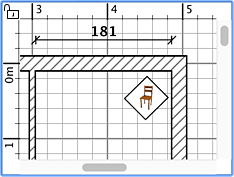
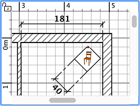

Um eine Bemaßung einzuzeichnen, müssten Sie zuerst im Menü
Plan > Bemaßungen erstellen oder das Bemaßungen
erstellen-Werkzeug auswählen.
 Bemaßungen erstellen-Werkzeug
Bemaßungen erstellen-Werkzeug
Sie können neue Bemaßungen im Wohnungsplan auf verschiedenen Wegen erstellen:
- Klicken Sie auf den Startpunkt einer neuen Bemaßung, klicken Sie
auf den Endpunkt, und klicken Sie ein drittes Mal, nachdem Sie den
Mauszeiger bewegt haben, um die Länge der Erweiterungslinien
zu wählen, die am Ende jeder Bemaßungslinie gezeichnet wird
- Bewegen Sie den Mauszeiger auf ein Ende eines Mobiliarstücks,
einer Wand oder eines Raumes, dem Sie eine Bemaßung
geben wollen, klicken Sie doppelt, um die temporäre Bemaßung
zu akzeptieren, dann klicken Sie ein drittes Mal, nachdem Sie die
Länge der Erweiterungslinien ausgewählt haben.
-
Drücken sie die Strg-Taste (oder alt / option-Taste unter macOS) und klicken Sie auf den
Startpunkt, um den Änderndialog anzuzeigen, der Ihnen erlaubt eine
Höhenmessung zu erstellen, die für das Objekt in der 3D-Ansicht angezeigt wird.
Die neuen Bemaßungen haben
keine Erweiterungslinien, wenn Sie die Maus nicht zwischen dem zweiten
und dritten Klick bewegt haben.
Drücken Sie jederzeit die Escape-Taste, um die Erstellung
einer Bemaßung abzubrechen.
Während Sie den Endpunkt einer Bemaßung wählen, wird jede
Mausbewegung eine Aktualisierung des Wohnungsplanes bzw. der angezeigten Größe
und Länge der Bemaßung hervorrufen.
|  |
 |
Erstellen einer Bemaßung
ohne Erweiterungslinien |
Erstellen einer Bemaßung
mit Erweiterungslinien |
Um das Zeichnen von Bemaßungen zu beenden, wählen Sie Plan
> Auswählen oder wählen das Auswählen-Werkzeug (oder ein beliebiges anderes Werkzeug).
 Auswählen-Werkzeug Auswählen-Werkzeug
|